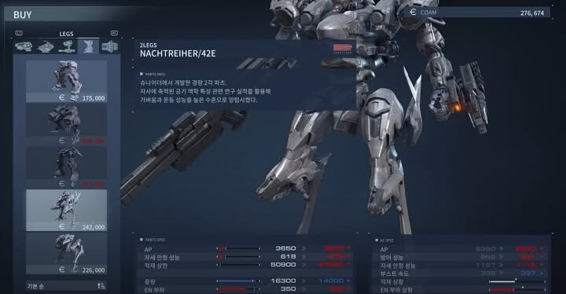

3인칭 메카닉 커스터마이징 액션
약 69,800원
약 20~40시간
아머드 코어 VI: 루비콘의 화염은 거대 기업들이 새로운 자원 '코랄'을 두고 경쟁하는 행성 루비콘 3를 배경으로 한 메카 액션 게임.플레이어는 독립 용병 '621'이 되어 다양한 의뢰를 수행하며 자신만의 아머드 코어를 조립하고 전장을 누비게 된다.
FromSoftware
https://store.steampowered.com/agecheck/app/2183900/?l=koreana&curator_clanid=46028301
https://familyace1001.tistory.com/entry/아머드-코어6-초보자-살만한가-난이도-조작감